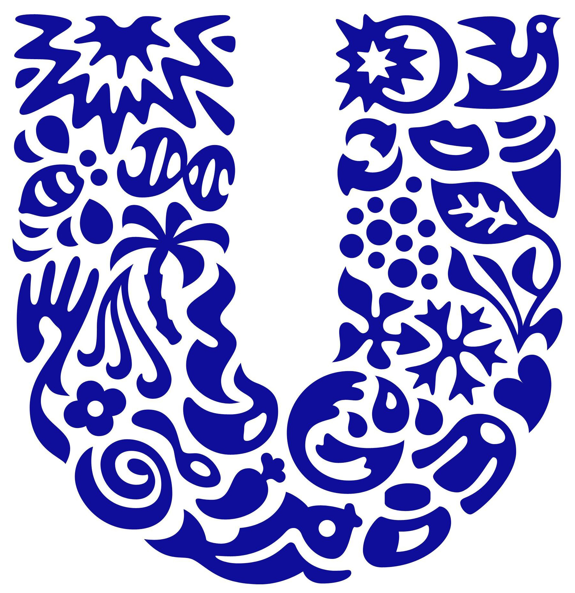

Simon Lindhart. Multimediedesigner 2018

Simplicity
Simplicity fortæller at vi ser komplexe ting i deres simpleste form, derfor forbinder vi hurtigt de forskellige ting så det bliver til et ansigt.
Closure
Handler om at vi mennesker gerne vil have at ting er fuldkommen. Derfor er ”law of closure” et effektivt visuelt design redskab da man kan lave et ufuldendt billede som brugeren selv kan færdiggøre.
White space

Man skal ikke være bange for at bruge whitespace på websider. Whitespace er god til at indikere hvad der er vigtigt på en side så man hurtigt kan navigere indholdet.
Commen fate
Commen fate er når vi f.eks. ser en gruppe mennesker på gaden der går i samme retning så er der en vis sammenhæng mellem personerne i gruppen og vis der er en i gruppen der går i modsatte retning så er der ikke den samme sammenhæng. Det samme ses i verdenen ved alt fra biler på veje til fugleflokke.
Grids
Figure ground
Denne lov hjælper os med at forklare hvilke objekter man med det samme vil se som forgrund og baggrund. På logo'et kan ser man enten vin flasker eller en gaffel.
Rule of thrid
The rule of thirds reglen bruges til at dele noget op i 4 punkter for at finde ud af hvor på en side/billede personer fokusere først.
Similarity
Vi forbinder automaisk ting som ser ens ud med hinanden ligesom vi forbinder de grå paraplyer med hinanden.
Proximity
Proximity fortæller at vi ser en forbindelse mellem ting/objekter som er tæt på hinanden og det er derfor vi med det samme ser logo'et som et U.
Symmetry
Symetriske objekter ser forbinder vi med hinanden og derfor ser kan vi se hjulet og dekslet som en hel cirkel.
Continuity
På grund af continuity følger vores blik den grønne linje og skaber derved et omrids af et juletræ.
The golden section
The golden section er en beregning der kan skabe et naturligt og harmonisk layout.(Man kan også finde the golden section overalt i naturen.)